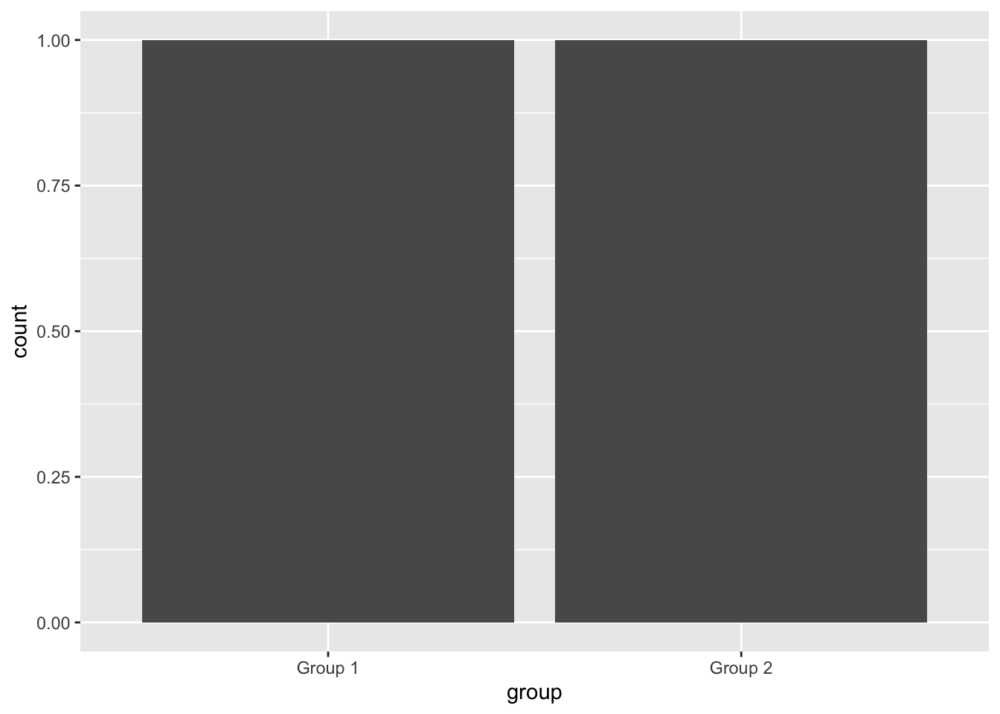
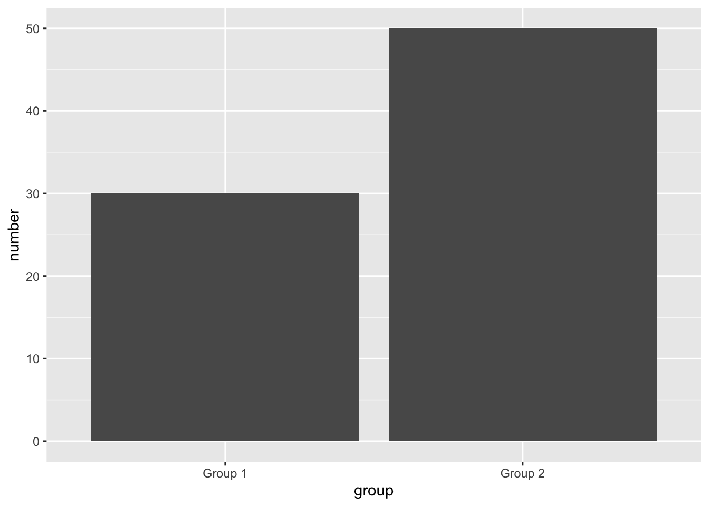

Intro to ggplot
ggplot is a graphic language that we use to make graphs. The basic text we use to understand how to do ggplot is called R for Data Science
Like a lot of other attractive things about R and R Studio the book is free!! and probably one of the best resources for understanding R and Data.
You can find the book here
I’ll be using several modified examples from chapter 3 of that book.
First you’ll want to load “tidyverse” as a package. Here’s how we find and load packages in R Studio.
- First search under “Packages” in the bottom right window
- Second Click on install and search for it in the CRAN responsitory
- Third Make sure you click on tidyverse under packages
This will execute a command that looks like the following
library(tidyverse)We’ll start off by using a dataset called “mpg” It should have loaded with the tidyverse package. Just type it in to find it
mpg# A tibble: 234 × 11
manufacturer model displ year cyl trans drv cty hwy fl class
<chr> <chr> <dbl> <int> <int> <chr> <chr> <int> <int> <chr> <chr>
1 audi a4 1.8 1999 4 auto… f 18 29 p comp…
2 audi a4 1.8 1999 4 manu… f 21 29 p comp…
3 audi a4 2 2008 4 manu… f 20 31 p comp…
4 audi a4 2 2008 4 auto… f 21 30 p comp…
5 audi a4 2.8 1999 6 auto… f 16 26 p comp…
6 audi a4 2.8 1999 6 manu… f 18 26 p comp…
7 audi a4 3.1 2008 6 auto… f 18 27 p comp…
8 audi a4 quattro 1.8 1999 4 manu… 4 18 26 p comp…
9 audi a4 quattro 1.8 1999 4 auto… 4 16 25 p comp…
10 audi a4 quattro 2 2008 4 manu… 4 20 28 p comp…
# … with 224 more rowsIt shows the dataset as a “tibble”, which just means table in the tidyverse
You can also view it as a regular dataset
View(mpg)Because it’s a preloaded dataset we can get information about it by using a question mark. A question mark in front of any command in R will automatically generate the help file
?mpgLevels of Measurement
- Categorical
- Binary variable
- Nominal variable
- Ordinal variable
- Continuous
- Interval variable
- Ratio variable
Datasets contain several different variables. Notice in the mpg dataset, there are several different variables such as model, year, cty, and hwy. These are several different types of variables because they represent different kinds of things. In statistics we refer to this as levels of measurement. There are two broad types of variables, categorical and continuous (Field, 2009, pages 8-9). Categorical variables are based on particular categories, such a type of shoe, religious affiliation, or political affiliation. A binary variable is a type of categorical variable that only takes two categories. So things like being pregnant or not, voting yes or no on a certain bill, or being alive or dead are binary variables, there are only two possible things in the category. Categorical variables that take on more than 2 possibilities are called nominal variables (nominal means names)
There’s no mathematics involved in determining categorical variables, it’s simply based on which category has the most accurate fit. Either you are a republican, democrat, or independent, there is no mathematical quantity that would determine the appropriate category. There is one type of categorical variable that is ordered based on the absence or presence of a particular property, which is an ordinal variable. Ordinal variables have a particular rank order, but the rankings are not equal or uniform. So for example, college basketball team rankings would be an ordinal variable. The teams are ranked from best to worst, but team #2 may be twice is good as team #3, while team #5 maybe four times as good as team #6. So ordinal data tells us more about the variable than nominal data, but it still doesn’t provide a standardized scale of measurement.
Continuous variables are the second broad category and involves some type of numerical measurement to define the property in the variable. Continuous variables can take on any value in the measurement scale defined by the variable. The first example of this type variable is an interval variable. These types of variables are based on a measurement scale with equal distances between the ranks based on the property measured; equal intervals in the scale are able to represent equal differences in the variable being measured. The Fahrenheit scale would be an interval scale because the difference in degree between 64 and 65 is the same as 74 and 75.
Ratio variables add one more dimension to the properties of an interval variable. In addition to having an equal distance in ranks, ratios have an absolute zero point. This allows for multiplication of the intervals or the use of ratios. So on a ratio scale of 0 to 5, a score of 4 would be twice as good as a score of 2. Time is a good example of a ratio scale. There is an absolute zero point (there is no such thing as negative time), the distance between 40 and 60 seconds is the same as the distance between 30 and 10 seconds. And 20 seconds is twice as long as 10 seconds. Another example, Fahrenheit is an interval scale because you can have negative degrees (e. g. -2 degrees below zero), while the Kelvin scale is a ratio scale because there is an absolute zero point and no negative numbers.
One other property of continuous variables is that they allow for different degrees of measurement precision. So for example, the continuous ratio variable of time can be measured in hours, minutes, seconds, milliseconds, etc. In contrast, a discrete variable can only take on a fixed measurement scale, like a rank scale of 1 to 10. The scale requires that you choose a value between 1 and 10, 2.5 is not possible.
Let’s start by creating a simple scatterplot graph
ggplot(data = mpg) +
geom_point(mapping = aes(x= displ, y=hwy))
There’s a few things to learn here in the code
- ggplot is the basic command and within the parentheses is the data we’ll be running our graph on
- geom_point is the type of graph will be using, geom stands for geometrical shape. So in this case we are making a graph of “points”
- The “mapping” argument lays out the variables we are graphing and is always paired with “aes”. Finally x and y lay out which variables are going to be on our x and y axes.
So our basic formula looks lke this: ggplot(data = ) +
About the variables
If you look at the variables, you’ll notice that hwy and displ are numbers and R views them as integers or whole numbers. Scatterplots usually require data that are numeric like this, numbers that go up in scale. So in this case scatterplots typically require interval or ratio data.
One peculiar thing about this graph is the group of numbers just above the numbers in the right corner. The general trend we see in these variables is that as displacement goes up (i.e. the engine using more gasoline) the highway mileage goes down. This is sometimes referred to as a negative relationship. The cars with the best highway mileage displace the least amount of gasoline. However, there’s a group of dots that range between 20 and 30 on the hwy variable, but seem to displace more gasoline than most. How can this be?
One way we can answer this question is by adding in an additional variable. In this case the class or type of car. Let’s add that in now as an additional variable to our graph.
ggplot(data = mpg) +
geom_point(mapping = aes(x = displ, y = hwy, color = class))
Notice how most of those dots are 2 seater cars. Thus, the reason they get better gas mileage is because they are smaller cars!!
Class is a particular kind of variable, in this case a nominal or categorical variable. r refers to them as characters. These are basically categories, so we can’t do any math on them. You can’t make a formula out of compact x midsize or minivan/pickup.
Let’s do one more graph, but add a little color
ggplot(data = mpg) +
geom_point(mapping = aes(x = displ, y = hwy), color = "blue")
Notice how when the word “color” is outside the x and y mappings it changes the color of our points. You can try several different colors for the points
Let’s learn one more graph, which is especially important for categorical variables, the bar graph.
First, download the “diamonds” data set
diamonds# A tibble: 53,940 × 10
carat cut color clarity depth table price x y z
<dbl> <ord> <ord> <ord> <dbl> <dbl> <int> <dbl> <dbl> <dbl>
1 0.23 Ideal E SI2 61.5 55 326 3.95 3.98 2.43
2 0.21 Premium E SI1 59.8 61 326 3.89 3.84 2.31
3 0.23 Good E VS1 56.9 65 327 4.05 4.07 2.31
4 0.29 Premium I VS2 62.4 58 334 4.2 4.23 2.63
5 0.31 Good J SI2 63.3 58 335 4.34 4.35 2.75
6 0.24 Very Good J VVS2 62.8 57 336 3.94 3.96 2.48
7 0.24 Very Good I VVS1 62.3 57 336 3.95 3.98 2.47
8 0.26 Very Good H SI1 61.9 55 337 4.07 4.11 2.53
9 0.22 Fair E VS2 65.1 61 337 3.87 3.78 2.49
10 0.23 Very Good H VS1 59.4 61 338 4 4.05 2.39
# … with 53,930 more rowsSo the basics of the formula are going to be the same, but this time we are using “geom_bar” as our geometrical shape to create a bar graph.
ggplot(data = diamonds) +
geom_bar(mapping = aes(x = cut))
If you look in section 3.7 in R for Data Science it explains what R is doing with the data

So R looks at the data set and automatically uses the count statistic to simply count the number of occurrences for that variable. So this only works for categorical variables.
Let’s inspect the cut variable to see if this is true. Remember that the str command allows us to investigate the types of variables in the dataset
str(diamonds)tibble [53,940 × 10] (S3: tbl_df/tbl/data.frame)
$ carat : num [1:53940] 0.23 0.21 0.23 0.29 0.31 0.24 0.24 0.26 0.22 0.23 ...
$ cut : Ord.factor w/ 5 levels "Fair"<"Good"<..: 5 4 2 4 2 3 3 3 1 3 ...
$ color : Ord.factor w/ 7 levels "D"<"E"<"F"<"G"<..: 2 2 2 6 7 7 6 5 2 5 ...
$ clarity: Ord.factor w/ 8 levels "I1"<"SI2"<"SI1"<..: 2 3 5 4 2 6 7 3 4 5 ...
$ depth : num [1:53940] 61.5 59.8 56.9 62.4 63.3 62.8 62.3 61.9 65.1 59.4 ...
$ table : num [1:53940] 55 61 65 58 58 57 57 55 61 61 ...
$ price : int [1:53940] 326 326 327 334 335 336 336 337 337 338 ...
$ x : num [1:53940] 3.95 3.89 4.05 4.2 4.34 3.94 3.95 4.07 3.87 4 ...
$ y : num [1:53940] 3.98 3.84 4.07 4.23 4.35 3.96 3.98 4.11 3.78 4.05 ...
$ z : num [1:53940] 2.43 2.31 2.31 2.63 2.75 2.48 2.47 2.53 2.49 2.39 ...Each of the variables are preceded by the $ sign. So we can see that cut is the second variable. Notice that it says cut is an ord. factor with 5 levels. This tells us that this variable is an ordinal variable because it is ordered based on the type of cut from fair (lowest type of cut) to ideal (the best type of cut)
Here’s another example from scratch
Example <- tribble(
~group, ~number,
"Group 1", 30,
"Group 2", 50
)Notice that our variable group is a categorical variable, but on it’s own the stat count won’t really tell us much (Group 1 = 1, Group 2 =1). So notice what happens when we use the code like our last example.
ggplot(data = Example) +
geom_bar(mapping = aes(x = group))
Doesn’t really tell us much does it? So in this case the count has to be supplied by a second variable, y. When we use a y variable for our bar chart we have to use a different stat for the bar chart, in this case, the stat is “identity” so the code looks like this.
ggplot(data = Example) +
geom_bar(mapping = aes(x = group, y = number), stat = "identity")
Now it’s easy to see the difference in count between Group 1 and Group 2